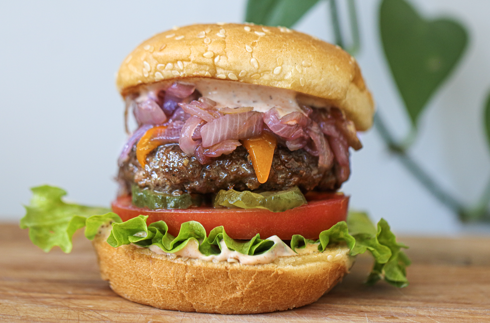

Krabby Jelly Patty
Jellyfish jelly can be obtained by milking the
jelly's stingers. It goes exceptionally well in a sandwich.
By accident the Krabby Jelly Patty was born when spongebob put the jelly into a regular
Krabby Patty.
Jelly from the Blue Jellyfish is the best variety.

Ingredients
- 1/2 onion (large)
- oil
- 3-4 tbsp water
- 2-3 tbsp grape jelly
- 1 egg
- 1/2 cup bell peppers (minced)
- 2 tbsp cilantro (chopped)
- 1 lb. ground chicken, turkey, or beef
- 1/2 cup bread crumbs
- 6 mini sesame buns
- 6 cheese slices
- 6 tomato slices
- (at least three large leaves) lettuce
- pickles
Steps
- Chop onions into long, thin slices.
Fry slices over low heat, until soft
and translucent.
- Stir in water and jelly.
Mix very well until jelly combines with water.
- Cook, stirring occasionally, until onions
have caramelized and most of the water has evaporated.
- Meanwhile, make burgers by combining egg, meat,
cilantro, and bell peppers. Add breadcrumbs
ntil mixture is dry enough to shape.
- Divide mixture into rounds and flatten into 6 patties.
- Grill burgers on each side until cooked through.
Transfer to prepared plate.
- Layer each burger as follows:
- Bottom bun
- Your choice of ketchup, mayo, or mustard (or all three!)
- Patty
- Cheese slice
- Pickles
- Lettuce
- Caramelized onions
- Tomato slice
- Top bun
- Serve, and enjoy the taste of natural jelly.